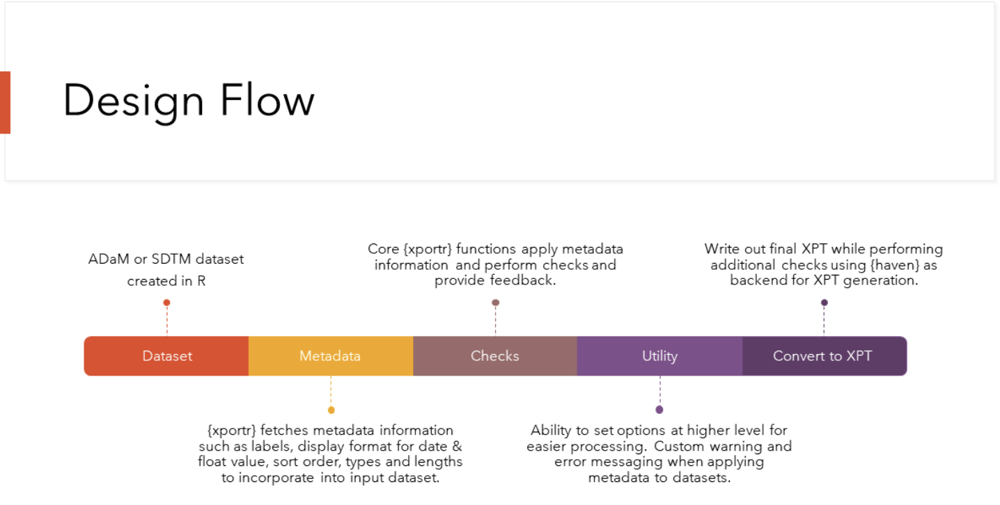

adsl <- data.frame(
Subj = as.character(123, 456, 789),
Different = c("a", "b", "c"),
Val = c("1", "2", "3"),
Param = c("param1", "param2", "param3")
)xpt Meets xportr!
In the pharmaceuticals and healthcare industries, it is crucial to maintain a standard structure for data exchange and regulatory submissions, enter xpt datasets! xpt datasets are binary files that are typically created by SAS software, they contain structured data, including variables, labels, and metadata. In order to develop xpt formatted files in R, let’s introducing you to xportr.
What is xportr?
xportr is the result of collaboration among developers from various domains within the pharmaceutical industry. click here for a full list. This collaborative effort ensures that xportr meets the diverse needs and requirements of users across various domains. By leveraging insights and expertise from different stakeholders, xportr continues to evolve and improve, maintaining its relevance and effectiveness in the ever-changing landscape of data management and analysis. xportr is currently on version 0.4.0 (you can keep up with all of its improvements by following the Changelog here) and with its meticulous design flow, users can expect to develop xpt files that have been vetted by many checks in the backend and which are CDISC compliant. 
Why xportr?
Did I mention that xportr is an indispensable R package for creating xpt datasets? This toolkit offers functions to apply metadata information to your CDISC-compliant datasets created in R, conduct strict checks, and offer valuable feedbacks about formats, format lengths, etc. In this blog post, we’ll explore some high level capabilities of xportr, and its development.
How does it work?
You too can experience some of the benefits of xportr by taking a deep dive at xportr!
There are data deliverables and supporting documentation needed for a successful submission to Health Authorities, while you can find a walk through on how you can use xportr here, let’s look at a high level example:
Looking at an adsl and the define metadata information
and the define metadata information
metadata <- data.frame(
dataset = "test",
variable = c("Subj", "Param", "Val", "NotUsed"),
type = c("numeric", "character", "numeric", "character"),
format = NA,
order = c(1, 3, 4, 2)
)Users can use the xportr_metadata() function along with xportr_type() and xportr_order() to not only apply metadata attributes to your data but also receive feedback on your data based on your spec. Additionally, some of those functions performing valuable checks like:
- Variable names must start with a letter (not an underscore), be comprised of only uppercase letters (A-Z), numerals (0-9) and be free of non-ASCII characters, symbols, and underscores.
- Allotted length for each column containing character (text) data should be set to the maximum length of the variable used across all data sets (≤ 200)
- Coerces variables to only numeric or character types
- Display format support for numeric float and date/time values
- Variables names are ≤ 8 characters.
- Variable labels are ≤ 40 characters.
- Data set labels are ≤ 40 characters.
- Presence of non-ASCII characters in Variable Names, Labels or data set labels.
For example:
adsl %>%
xportr_metadata(metadata, "test") %>%
xportr_type() %>%
xportr_order()── Variable type mismatches found. ──✔ 2 variables coerced── 1 variables not in spec and moved to end ──── 2 reordered in dataset ── Subj Param Val Different
1 123 param1 1 a
2 123 param2 2 b
3 123 param3 3 cIn addition to the functions mentioned above, users have access to other functionalities such as xportr_write(), which facilitates the conversion of a local data frame into an xpt file. For instance, if we utilize the ADSL dataframe defined earlier, we can create a variable var_spec using the following syntax.
var_spec <- data.frame(
dataset = "adsl",
label = "Subject-Level Analysis Dataset",
data_label = "ADSL"
)Users can then create their ADSL xpt file in the following manner:
xportr_write(adsl,
path = paste0(tempdir(), "/adsl.xpt"),
domain = "adsl",
metadata = var_spec,
strict_checks = FALSE
)xportr also includes other important functions such as:
xportr_length()to assign the SAS length to a specified data frame.xportr_label()to enable users to assign variable labels from metadata at the variable level to a specified data frame.xportr_format(), which allow users to apply a SAS format from a variable level metadata to a given data frame Further details on allxportrfunctions can be foundhere.
Key Features of xportr:
- Efficient Handling:
xportroffers efficient avenues to producexptfiles, allowing users to manipulate clinical datasets with ease and export inxptformat in R. - Data Integrity:
xportrpreserves data integrity by retaining variable labels, formats, and other metadata during data export operations. - User-Friendly Interface:
xportrprovides a user-friendly interface with intuitive functions for generatingxptdatasets and performing data manipulation tasks.
About the other kid on the blog, (JSON)! Is The Future xpt or JSON?
xpt datasets are standardized, structured files used for storing clinical trial data, making them essential for regulatory submissions and data analysis. They remain indispensable in certain industries and with advancements in data management and analysis tools, the future of xpt datasets lies in improved efficiency, compatibility, and ensuring seamless integration with emerging technologies and data formats.
As data continues to play a central role in decision-making and innovation, the future of JavaScript Object Notation (JSON) datasets is worth exploring. JSON datasets offer flexibility, simplicity, and interoperability, making them increasingly popular for data storage and exchange. In fact, R users can refer to this article for a summary about JSON and the R package datasetjson available on CRAN. JSON’s lightweight and human-readable format make it suitable for a wide range of applications, including web development, APIs, IoT, and data storage. While xpt datasets remain prevalent in certain industries, there’s a growing interest in JSON datasets across various domains. Although we will not be exploring JSON datasets, this formatted data type was worth mentioning in this blog.
Let’s Recap!
This blog post highlighted the benefits of using the xportr package, showcased an example of xportr function, and discussed the growing interest of JSON datasets in the data landscape. We’ve also discussed xportr’s development through collaborations between developers from different parts of the industry, highlighting its versatility and relevance in various domains. Which gives me a nice transition to my call to action!! If you haven’t used xportr before, then consider this blog as your official invite to test it! Reap the benefit of collaborative efforts across industries and the pharma world. If are already a user of xportr or you are experiencing some issues with a particular functions, then chances are someone else could either be experiencing a similar issue or have an answer so reach out to the team by creating an issue here.
As we look towards the future, embracing diverse data formats and technologies will be key to unlocking the full potential of data-driven innovation. Championing tools like xportr and staying abreast of emerging data formats, researchers, analysts, and regulatory professionals can unlock new opportunities for insights and innovation in their respective fields.
Disclaimer This blog contains opinions that are of the authors alone and do not necessarily reflect the strategy of their respective organizations.
Last updated
2024-06-04 19:27:49.850845
Details
Reuse
Citation
BibTeX citation:
@online{mascary2024,
author = {Mascary, Sadchla},
title = {Xportr 0.4.0},
date = {2024-03-29},
url = {https://pharmaverse.github.io/blog/posts/2024-03-29_xportr_0_4_0/xportr_0_4_0.html},
langid = {en}
}
For attribution, please cite this work as:
Mascary, Sadchla. 2024. “Xportr 0.4.0.” March 29, 2024. https://pharmaverse.github.io/blog/posts/2024-03-29_xportr_0_4_0/xportr_0_4_0.html.